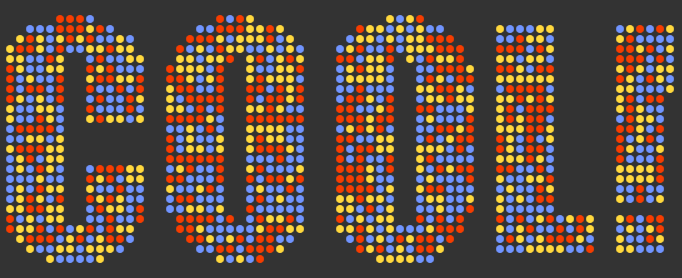
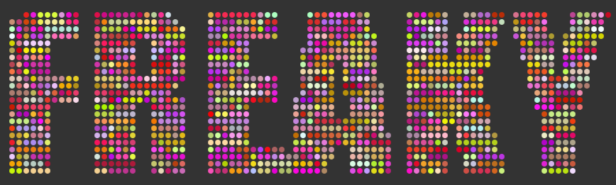
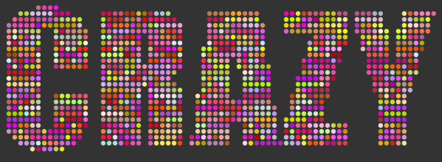

HTML5 Interactive Banners
Because banners aren't fun enough! -- (Click on each image to see the them in action...)



Because banners aren't fun enough! -- (Click on each image to see the them in action...)